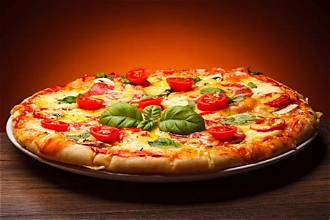
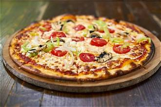

Food is a substance consumed to provide nutritional support for the body.Food is usually of plant, animal or fungal origin, and contains essential nutrients, such as carbohydrates, fats, proteins, vitamins, or minerals.
chinese cusines is an important part of chinese culture, which includes cusines origanating from diverse regions of China, as well as from chinese people in other parts of world. Because of the chinese diaspora and historical power of the country, chinese cusine has influence many other cusines in Asia, with modification made to cater to local palets. Chinese food staples such as rice, soya sauce, noodles, tea and tofu and utensils such as chopsticks and the wok, can now be found world wide
Pizza

Pizza, Neapolitan is a savory dish of italian origin consisting of usally flattened base of leavened wheat-based dough topped with tomatos chesse and often various other ingredinent like mushrooms, onion, olives, pineapple, meat, salami etc. Pizza is then baked at high temratur, traditionally in a wood fired oven. A small pizza is sometimes called as pizzetta. A person who makes pizza is called as pizzaiolo.Pizza

Pizza, Neapolitan is a savory dish of italian origin consisting of usally flattened base of leavened wheat-based dough topped with tomatos chesse and often various other ingredinent like mushrooms, onion, olives, pineapple, meat, salami etc. Pizza is then baked at high temratur, traditionally in a wood fired oven. A small pizza is sometimes called as pizzetta. A person who makes pizza is called as pizzaiolo.